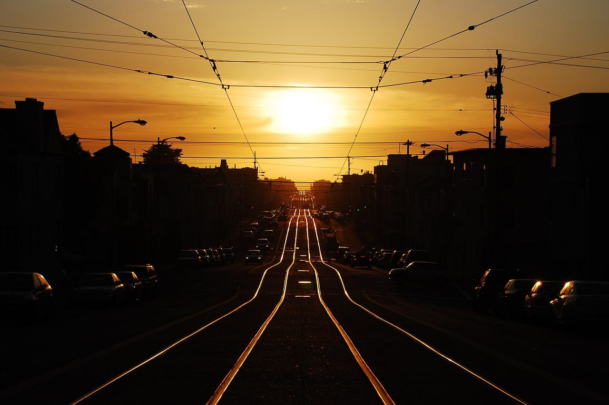

Inner Sunset
The blocks between Golden Gate Park and Mount Sutro, laid out along the Muni N-Judah line that reached them through the Sunset Tunnel in 1928. Coverage began with a single building named in the 2022 Duboce Triangle context statement as a citywide example of the Streamline Moderne style, and grew substantially with a pass of William Kostura's Inner Sunset Historic Context Statement, adopted 2024.

Map
Named buildings and landmarks
-
1

-
2
-
3
-
4
-
5
Streets documented so far
- 10th Avenue
27 buildings, built 1900–1987. - 11th Avenue
25 buildings, built 1900–1936. - 12th Avenue
22 buildings, built 1900–1965. - 14th Avenue
7 buildings, built 1900–1949. - 15th Avenue
2 buildings, built 1913–1927. - 16th Avenue
8 buildings, built 1900–1926. - 17th Avenue
4 buildings, built 1924–1931. - 18th Avenue
5 buildings, built 1907–1963. - 19th Avenue
2 buildings, built 1912–1963. - 20th Avenue
4 buildings, built 1927–1950. - 21st Avenue
1 building, built 1929. - 23rd Avenue
2 buildings, built 1924–1950. - 24th Avenue
4 buildings, built 1911–1950. - Arguello Boulevard
1 building, built 1913. - Belgrave Avenue
1 building, built 1972. - Carl Street
1 building, built 1962. - Clarendon Avenue
1 building, built 1956. - Cragmont Avenue
1 building, built 1934. - Edgewood Avenue
1 building, built 1986. - Eighth Avenue
22 buildings, built 1900–1937. - Fifth Avenue
17 buildings, built 1900–1954. - Fourth Avenue
5 buildings, built 1904–1910. - Frederick Street
1 building. - Funston Avenue
2 buildings, built 1900–1958. - Hugo Street
8 buildings, built 1905–1914. - Irving Street
25 buildings, built 1900–1989; 2 in the Irving Street and 15th Avenue Neighborhood Commerical Historic District. - Judah Street
6 buildings, built 1905–1953. - Kirkham Street
8 buildings, built 1904–1955. - Lawton Street
2 buildings, built 1914. - Lincoln Way
7 buildings, built 1900–1928. - Moraga Street
1 building, built 1902. - Ninth Avenue
39 buildings, built 1900–1990. - Noriega Street
1 building, built 1911. - Ortega Street
1 building, built 1914. - Pacheco Street
1 building, built 1958. - Parnassus Avenue
2 buildings, built 1912–1925. - Second Avenue
4 buildings, built 1908–1923. - Seventh Avenue
13 buildings, built 1900–1925. - Sixth Avenue
28 buildings, built 1900–1916. - Stanyan Street
1 building; 1 in the San Francisco 1952 Firehouse Bond Act Thematic District (Discontiguous). - Third Avenue
8 buildings, built 1909–1961. - Twin Peaks Boulevard
1 building, built 1950. - Ventura Avenue
1 building, built 1927; 1 in the Forest Hill Historic District. - Villa Terrace
1 building, built 1951. - Warren Drive
2 buildings, built 1961. - Woodland Avenue
2 buildings, built 1910.
Parks and public spaces
- 15th Avenue Steps
Mini park, 22,216 sq ft. - Golden Gate Heights Park
Neighborhood park or playground, 7.0 acres. - Grand View Open Space
Neighborhood park or playground, 34,412 sq ft. - Grand View Park
Neighborhood park or playground, 4.1 acres. - J.P. Murphy Playground
Neighborhood park or playground, 1.3 acres. - Rocky Outcrop
Neighborhood park or playground, 1.7 acres. - Sunset Rec Center
Neighborhood park or playground, 3.9 acres. - White Crane Springs Community Garden
Community garden, 20,038 sq ft.
Historic districts here
Adjacent neighborhoods
Golden Gate Park closes these blocks to the north. Sunset / Parkside continues west through the avenues and West of Twin Peaks lies south beyond Laguna Honda. East over Mount Sutro and the Twin Peaks ridge are Haight Ashbury, Corbett Heights and the Castro.